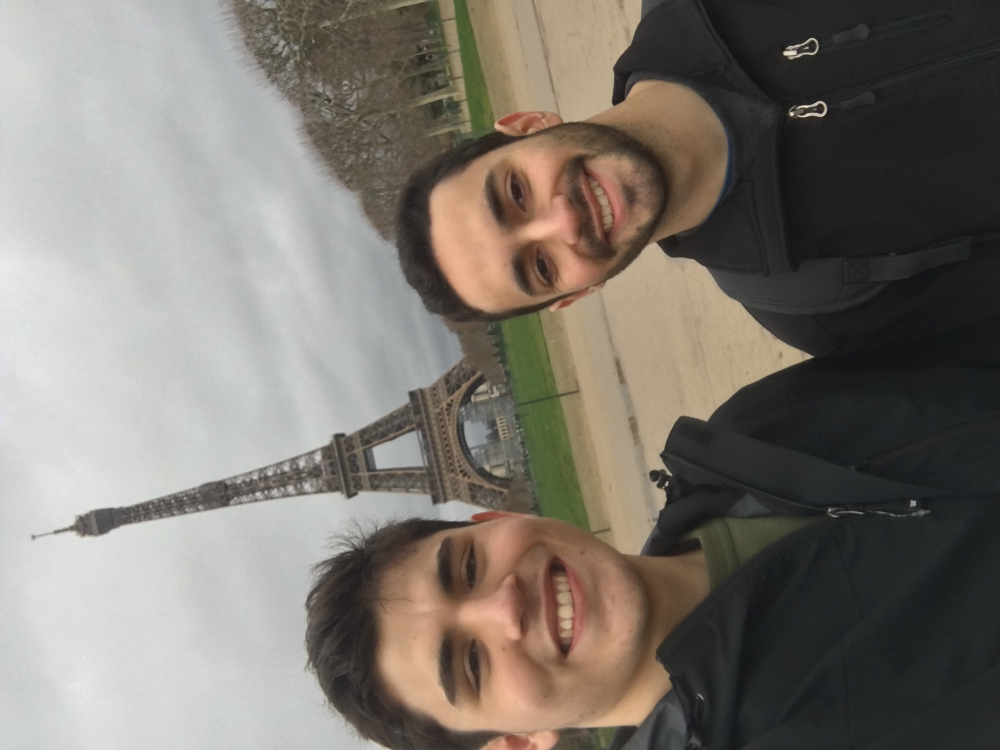
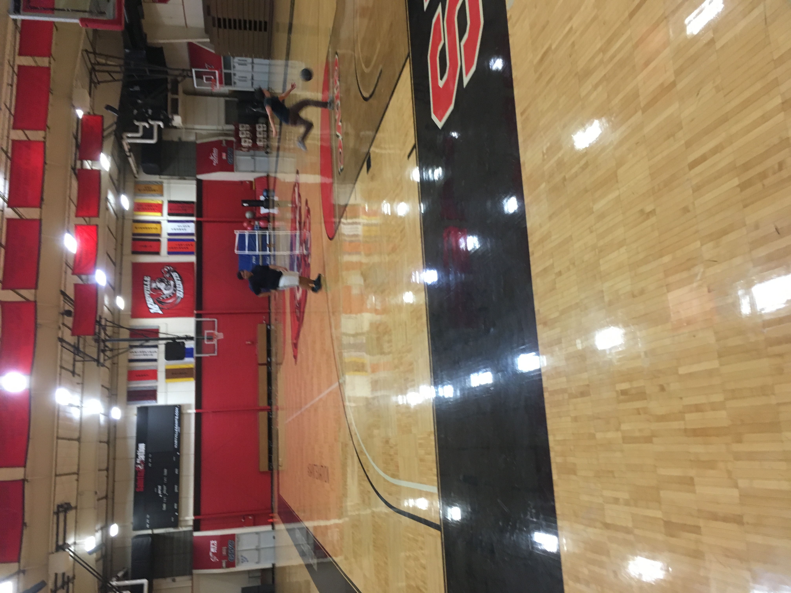
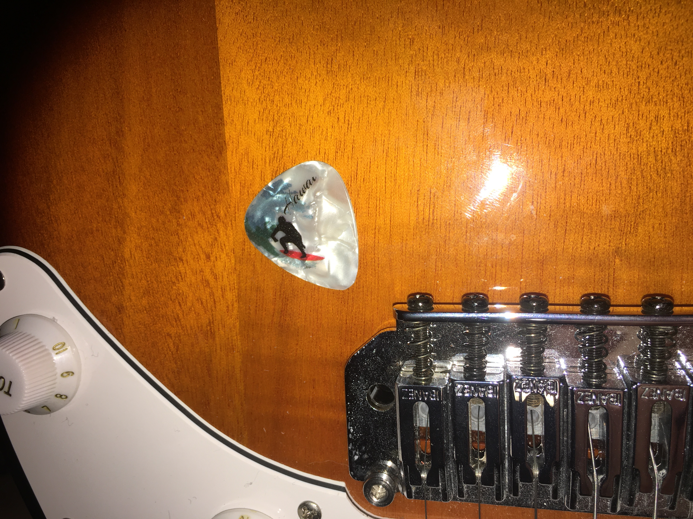

French Culture

I am interested in French culture. I enjoy learning about France and its rich history.
It wasn't until my trip to France when I started to increasingly appreciate art and history.
I also enjoy watching the French news and random youtube videos in French.
I love talking to the walls in French, because I don't have any French friends to practice with!
I do have a couple friends who speak French, but they are not around and I'm trying to hit the next level.
Basketball

I love playing basketball, especially if I'm with friends.
A couple of years ago my friends and I would play almost every week around 10 pm.
Unsurprisingly, we have been kicked out of the elementary school's hoops for being too loud and tresspassing?
I don't play anymore, but if our friends and I get the chance to get back together to play again, it'll be another great time.
It was always fun picking up games with random others because it was almost a guaranteed dub 🔥 🔥
Haha jk but not...;)
The guitar

I've been playing the guitar on and off for many years, I finally, seriously, started to practice it since the start of the pandemic.
I don't know how to play any songs which is dissapointing but I know how to play some scales and random stuff.
I've been learning to improvise and understand the fretboard. I like to practice by playing a random backing track in any key, from youtube, and improvise!
Or aleast try 😖 It's what I do when I procrastinate doing school work.
Skateboarding
In order to become cooler, wear my hat backwards and shop at pacsun, I picked up skateboarding. I started July of 2020 and my goal is to learn the kickflip by July of 2021.
I hardly have any free time to ride around, but when I do it's ultra fun. It's calming and therapeutic to plug in your headphones and ride around while listening to the sound of the wheels in the background.
I also hope to learn and master riding the pools in the skateparks.